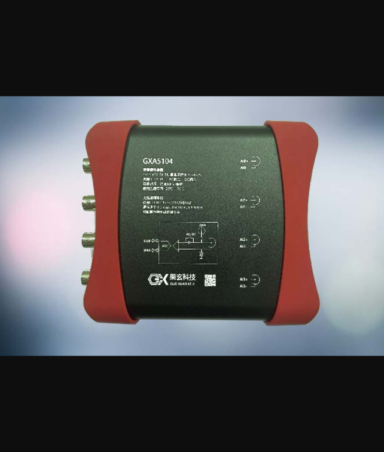
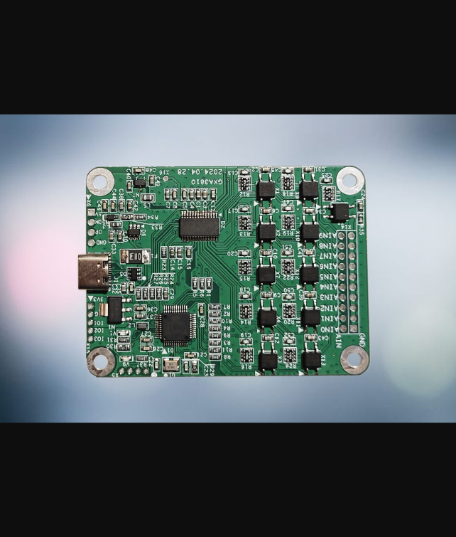
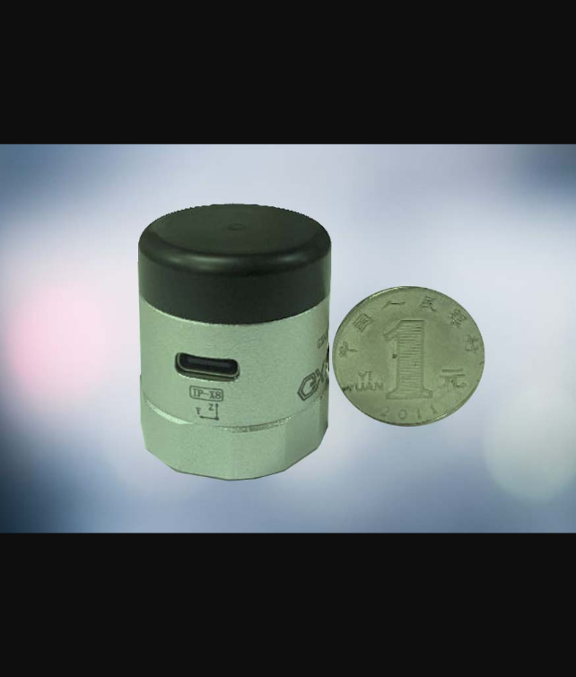
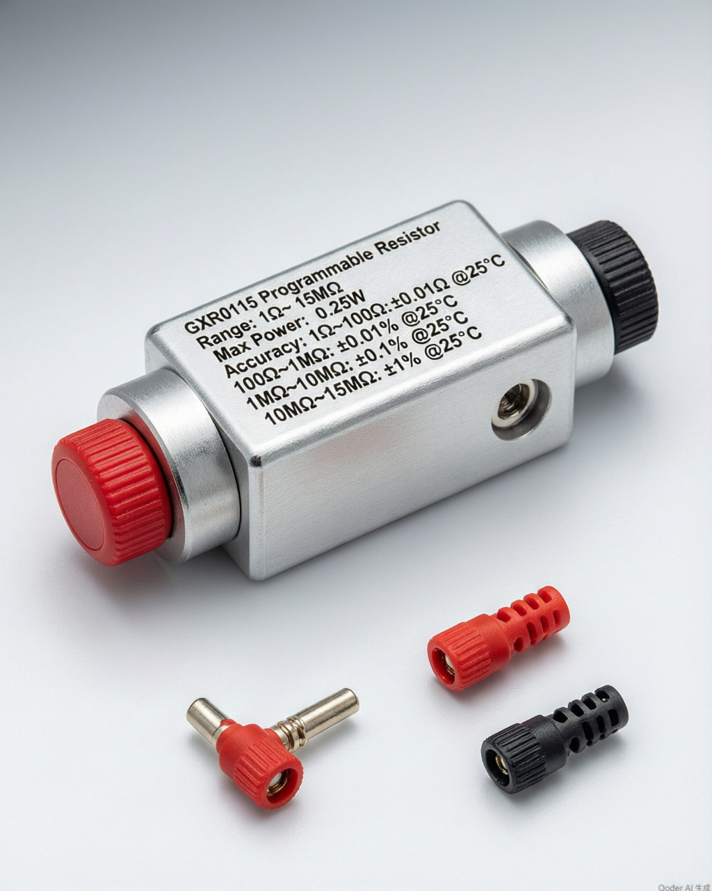
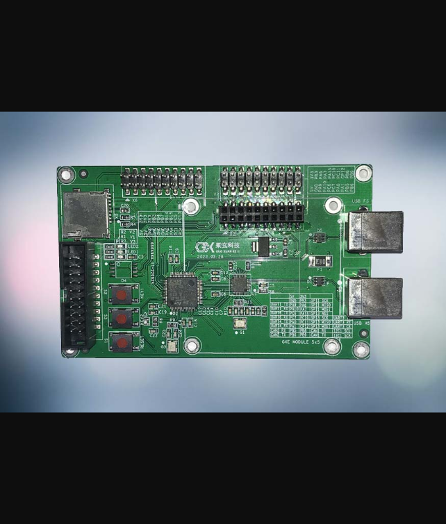
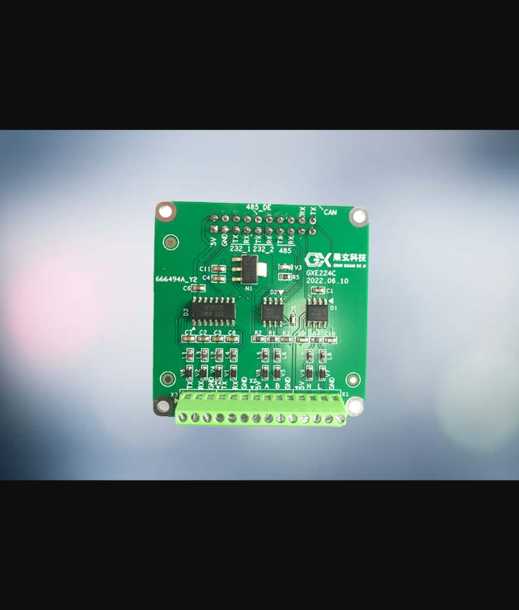
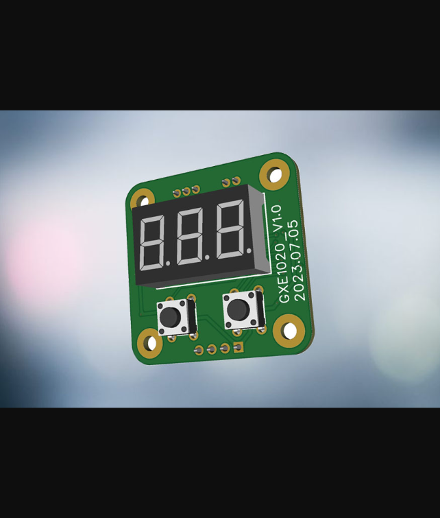
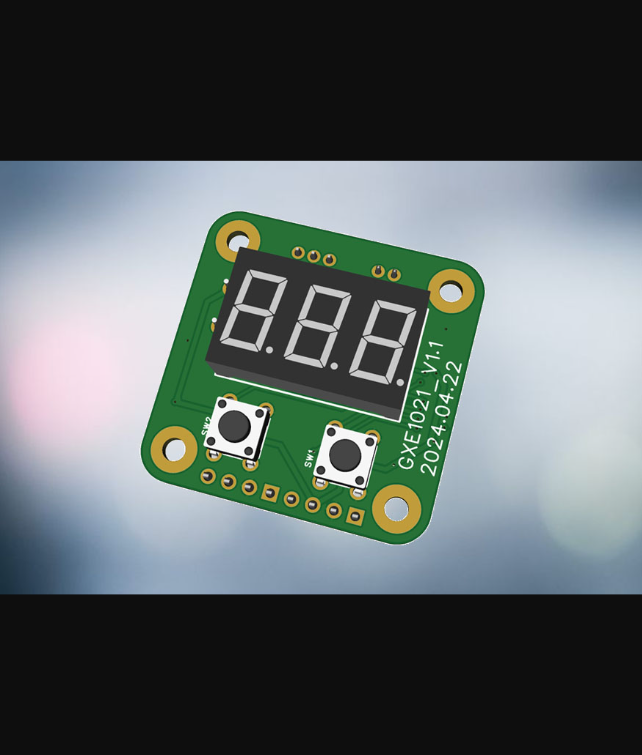
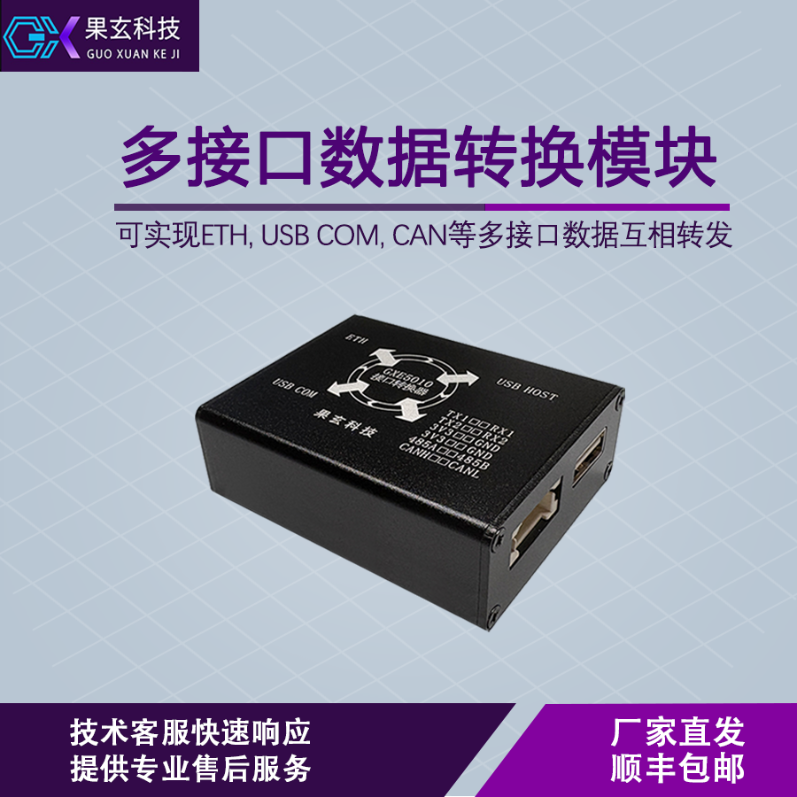
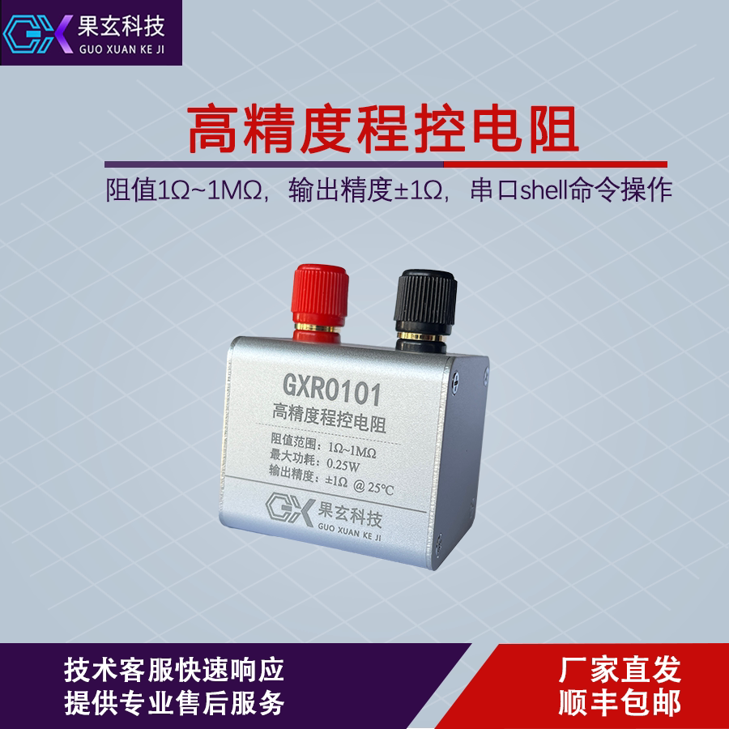

Product Center
Specialized solutions for bridge & tunnel vibration monitoring and sensor calibration

Data Acquisition Card
GXA5104
4 Channel | 24-bit | 51.2 kHz
View Details →
Data Acquisition Card
GXA3801
High Precision | 32-bit | 38.4 kHz
View Details →
Data Acquisition Card
GXA3810
10 Channel | 32-bit | 400 Hz
View Details →
Wireless Sensor Node
GXN2703
3-Axis Acceleration | Wireless | IP-X8
View Details →
Control Signal Output
GXR0115
Programmable Resistor | 1Ω–15MΩ | 0.01%
View Details →
Expansion Module
GXE0002
WinUSB Base Board | STM32F405 | USB HS
View Details →
Expansion Module
GXE224C
CAN | RS485 | RS232 | 5cm × 5cm
View Details →
Expansion Module
GXE1020
Electric Screwdriver Module | Digital Display
View Details →
Expansion Module
GXE1021
Electric Screwdriver Module | Wireless | Networked
View Details →
Data Transmission
GXE5010
ETH | USB COM | CAN | RS485 | UART
View Details →
Control Signal Output
GXR0101
Programmable Resistor | 1Ω–1MΩ | ±1Ω
View Details →